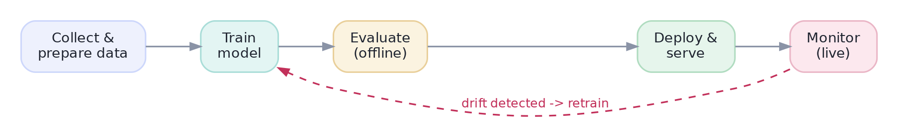

From Notebook to Pipeline
Package the messy notebook steps into one repeatable train-and-predict pipeline.
A model in a notebook helps no one. Value is created only when a model runs reliably, on new data, without you babysitting it — scoring transactions at 3 a.m., ranking feeds for millions, flagging fraud in real time. The gap between "it works in my notebook" and "it runs in production" is enormous, and bridging it — MLOps — is what turns a data-science experiment into a data-science product. This track is that bridge.
The big pictureThe ML lifecycle is a loop, not a line
Productionizing a model isn't a one-time hand-off; it's a cycle that never really ends. You collect data, train, evaluate offline, deploy, and monitor — and monitoring feeds back into retraining as the world changes:

Reproducible, automated stepsFrom notebook to pipeline
The first step to production is turning ad-hoc notebook cells into a pipeline: a defined, repeatable sequence — ingest → clean → engineer features → train (or score) — that runs the same way every time, by a schedule or a trigger, with no human clicking cells. Crucially, the exact same feature-engineering code runs at training and at serving time. If training scales a feature one way and serving does it another, predictions silently corrupt — the dreaded training–serving skew.
Training–serving skew is a top cause of "great in the notebook, broken in production." It happens when the transformations applied to live data differ — even subtly — from those used in training: a different default fill value, a scaler recomputed on live data, a category the encoder never saw. The fix is to package the fitted transforms with the model (one pipeline object) and reuse it verbatim at serving — never re-implement preprocessing separately for production.
This is exactly why the Pipeline object (from the feature-engineering track) matters in production: it bundles every fitted step — imputers, scalers, encoders, the model — into a single artifact. You fit it once on training data, save it, and at serving time call one .predict(); the identical preprocessing is guaranteed. See the serving-time reality — you apply the saved training parameters, never recompute on the incoming request:
import numpy as np
# Parameters LEARNED at training time and saved with the model:
saved_mean, saved_std = 50.0, 10.0 # e.g. a fitted scaler
# A live request arrives. Transform it with the SAVED params (not recomputed!):
new_request = np.array([65.0, 45.0, 70.0])
scaled = (new_request - saved_mean) / saved_std
print("scaled request:", scaled.round(2), " -> feed to model.predict()")scaled request: [ 1.5 -0.5 2. ] -> feed to model.predict()
Interactive labYour turn — transform a live request the right way
At serving time you must reuse the training scaler's saved parameters, never recompute on the incoming data. Standardize new_request with saved_mean and saved_std, take the mean of the result, round to 2 decimals, and assign to answer.
(new_request - saved_mean) / saved_std, then .mean(), float(...), round to 2 dp. Use the saved params, not new_request.mean().answer = round(float(((new_request - saved_mean) / saved_std).mean()), 2)The request mean is 60, so (60-50)/10 = 1.0. Using the saved training parameters guarantees the live data is transformed exactly as training data was — the antidote to training-serving skew. Recomputing stats on each request would silently break predictions.
★ Key points to remember
- A model only creates value when it runs reliably on new data, unattended — that's MLOps.
- The ML lifecycle is a loop: data → train → evaluate → deploy → monitor → retrain — not a one-time hand-off.
- Turn notebook cells into a pipeline: the same steps, run the same way every time, automatically.
- The same preprocessing must run at training and serving — package fitted transforms with the model to avoid training–serving skew.
- At serving time, apply the model's saved parameters to incoming data; never recompute them per-request.
◆ Practice▸
Show solution & reasoning
(1) Refactor into a pipeline: move the notebook's clean→feature→model steps into tested .py code, with all fitted transforms bundled in one pipeline object. (2) Pin the environment (requirements/lockfile) and version the code in Git and the trained model artifact (next lesson). (3) Parameterise inputs/outputs — read the day's customers from the warehouse, write scores back — using config, not hard-coded paths. (4) Schedule it (cron, Airflow, a cloud scheduler) to run nightly, loading the saved pipeline and calling .predict(). (5) Add logging + monitoring so a failure or a drop in score quality raises an alert. The essence: same code, same preprocessing, runs unattended on fresh data, observable when it breaks.
Show solution & reasoning
Treating deployment as the finish line ignores that a model's accuracy decays the moment the world starts differing from its training data (customer behaviour shifts, new products launch, seasonality turns). A 'line' mindset ships the model and walks away, so the silent decay goes unnoticed until it causes real damage (mispriced risk, missed fraud, angry users). Treating it as a loop means you build monitoring to detect drift, alerts to catch it, and a retraining path to refresh the model — keeping it healthy over time. The loop framing is what turns a one-off artifact into a durable, maintained system, and it's the single biggest mindset difference between research and production ML.
◎ Deep dive: batch vs. real-time pipelines, and how MLOps extends DevOps▸
Batch vs. streaming pipelines. Many production models run as batch jobs: on a schedule (nightly, hourly) they pull a chunk of data, score it, and write results — simple, robust, and enough for most business use cases (churn lists, risk scores, recommendations refreshed daily). Others must react in real time (fraud on a live transaction, ad ranking on page load), which needs a streaming or request/response architecture (next lesson). The engineering complexity jumps with latency requirements, so a mature first question is always: does this actually need to be real-time, or is batch fine? — because batch is far cheaper to build and operate.
Where MLOps borrows from software engineering — and where it's harder. Pipelines, version control, testing, CI/CD, and monitoring all come straight from software engineering, and MLOps rightly adopts them. But ML adds problems ordinary software doesn't have: the artifact depends on data (which drifts) as much as code, 'correctness' is statistical not binary, and you must version data and models, not just source. That's why the field grew its own tooling — experiment trackers, model registries, feature stores, drift monitors — on top of classic DevOps. The mindset to carry in: a model is code + data + environment, and all three must be reproducible, versioned, and observed for it to be trustworthy in production.